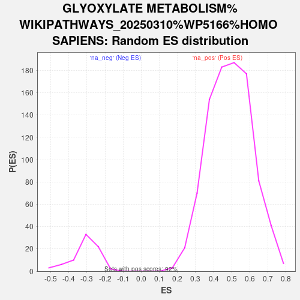

| | | Dataset | ranked_genes |
| Phenotype | NoPhenotypeAvailable |
| Upregulated in class | na_neg |
| GeneSet | GLYOXYLATE METABOLISM%WIKIPATHWAYS_20250310%WP5166%HOMO SAPIENS |
| Enrichment Score (ES) | -0.7405464 |
| Normalized Enrichment Score (NES) | -2.3872092 |
| Nominal p-value | 0.0 |
| FDR q-value | 1.4473684E-4 |
| FWER p-Value | 0.001 |
Table: GSEA Results Summary
 Fig 1: Enrichment plot: GLYOXYLATE METABOLISM%WIKIPATHWAYS_20250310%WP5166%HOMO SAPIENS
Fig 1: Enrichment plot: GLYOXYLATE METABOLISM%WIKIPATHWAYS_20250310%WP5166%HOMO SAPIENS
Profile of the Running ES Score & Positions of GeneSet Members on the Rank Ordered List
| SYMBOL | RANK IN GENE LIST | RANK METRIC SCORE | RUNNING ES | CORE ENRICHMENT | | 1 | LDHA | 5284 | 1.696 | -0.1528 | No |
| 2 | HAO1 | 16052 | -0.403 | -0.7083 | Yes |
| 3 | GOT2 | 16374 | -0.516 | -0.6846 | Yes |
| 4 | ALDH4A1 | 16558 | -0.583 | -0.6480 | Yes |
| 5 | SLC26A1 | 16577 | -0.591 | -0.6017 | Yes |
| 6 | DAO | 16812 | -0.694 | -0.5590 | Yes |
| 7 | PRODH2 | 16814 | -0.695 | -0.5034 | Yes |
| 8 | HOGA1 | 17290 | -0.964 | -0.4523 | Yes |
| 9 | AGXT | 18035 | -1.896 | -0.3413 | Yes |
| 10 | GRHPR | 18101 | -2.088 | -0.1779 | Yes |
| 11 | PXMP2 | 18188 | -2.380 | 0.0078 | Yes |
Table: GSEA details [plain text format]

Fig 2: GLYOXYLATE METABOLISM%WIKIPATHWAYS_20250310%WP5166%HOMO SAPIENS: Random ES distribution
Gene set null distribution of ES for GLYOXYLATE METABOLISM%WIKIPATHWAYS_20250310%WP5166%HOMO SAPIENS